Senior product designer
Designing across AI SaaS, healthcare, and e-commerce. Making complexity feel simple, one product at a time. Based in Delhi, working globally.
View selected work ↓Selected work
2022 — 2026
About
I genuinely enjoy tackling complex problems with people. Whether it's collaborating with my design team or working across product, engineering, and business, I love the energy of a room full of different perspectives. Whiteboards covered in sketches, healthy debates, spontaneous jokes, and moments of clarity that emerge from the chaos, that's where I do my best work. Turning diverse ideas into a shared strategy and a clear path forward is the part of design I enjoy the most.
Every problem demands a unique approach. I keep the process structured to uncover the right direction quickly and accelerate delivery.
Get in touch
Open to full-time roles, freelance projects, and creative collaborations. I respond within 24 hours.
myAster · B2C e-pharmacy · 2026 · Case study
Designing a trustworthy recurring-purchase model for the Middle East's largest pharmacy and wellness marketplace.
The problem
Subscribe & Save wasn't surfaced where purchase intent was highest, and cancellation was buried behind support, the two biggest risks to trust in a recurring-purchase model.
The outcome
A full-funnel subscription system, discovery, checkout, and management, with skip and cancel treated as first-class actions rather than afterthoughts.
350+
Flow states designed
3
Competitor models audited
10
Users in moderated testing
2
Languages, EN + Arabic RTL
Context
The business runs on repeat essentials — vitamins, baby care, supplements, OTC medicine — the exact category where subscriptions thrive on Amazon and most grocery apps. Ours had none. Every reorder meant a customer remembering to come back, search, and re-buy manually, and every one of those gaps was a chance to lose them to a competitor.
Leadership framed it as a growth lever: convert one-time buyers of repeat categories into predictable, recurring revenue. My job was to design the system that made that conversion feel like a deal worth taking — not a trap that's hard to leave.
The problem
Before designing anything, I audited few competitor subscription models (Amazon Subscribe & Save, I-Herb, IM8) and ran a lightweight journey-mapping session against our own funnel data.
01 / Discovery
Subscribe & Save wasn't surfaced on listing or search pages — the moment with the highest intent — so most customers should know the option exists before going deep into a PDP.
02 / Trust
The subscription value, the discount, delivery promise and cancellation terms should be legible side-by-side with the regular price for easy comparison.
03 / Control
A dedicated space to see, skip, pause, manage a subscription — the single biggest trust-maker for recurring billing, and the #1 driver of support tickets in comparable models.
Process
I ran this as a single continuous flow — discovery, conversion, and post-purchase management needed to feel like one coherent promise, not three disconnected screens.
01
Competitor audit across 3 regional & global apps. End-to-end journey mapping of the existing one-time purchase funnel.
02
Synthesized pain points into 3 jobs-to-be-done. Mapped every state the flow needed to handle — including failure states.
03
Component-first system built natively for both app and responsive web, designed in parallel rather than ported after the fact.
04
Native + web screens · RTL variants · Annotations · Dev specs
10
buyers in moderated usability testing, across two rounds of revisions
3
competitor subscription models audited, from Amazon to regional pharmacy apps
350+
distinct flow states designed and shipped — including payment failure, OOS, and RTL variants
Decision 01 — Discoverability
The biggest single lever wasn't anything on the PDP — it was surfacing the offer on listing and search pages, where browsing intent is highest and competitors had nothing.
Listing page · Subscribe & Save badge
A green 'Subscribe & Save' tag plus a visible second discount line sits directly under the price — no tap required to see the value.
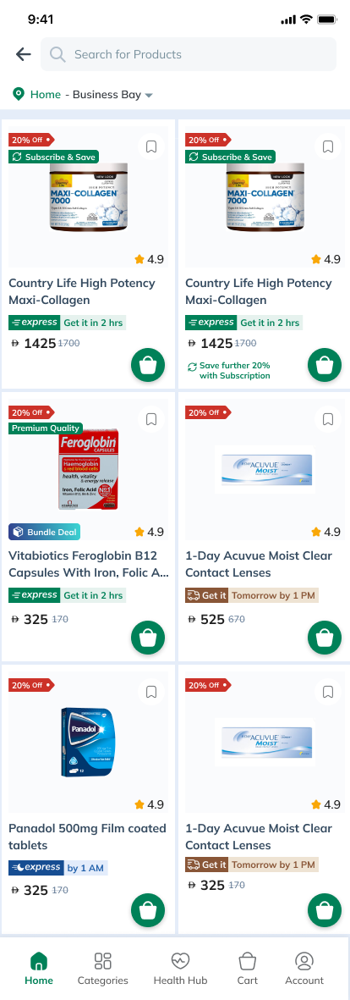
Decision 02 — Conversion
On the product page, one-time purchase and Subscribe & Save sit as two visibly priced cards rather than a toggle hidden in a dropdown. Frequency is pre-set to the recommended cadence so the default path is a single confident tap.
Flow · PDP → Subscribe → Frequency → Confirm → Cart → Checkout → Order placed
Full primary path including the standard bottom-sheet for changing delivery frequency, and the payment-failure recovery screen.
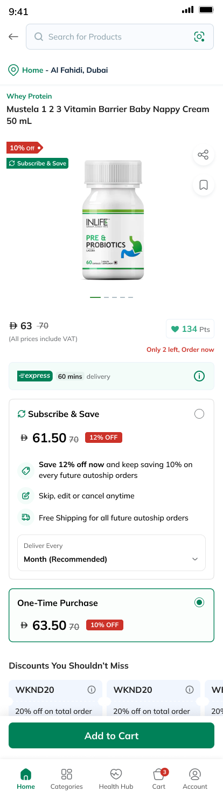
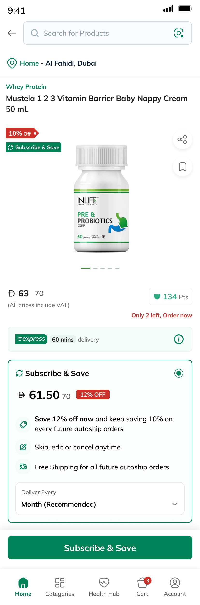
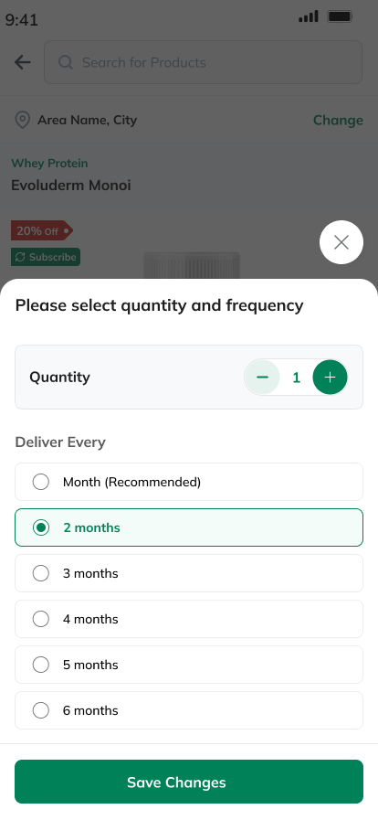
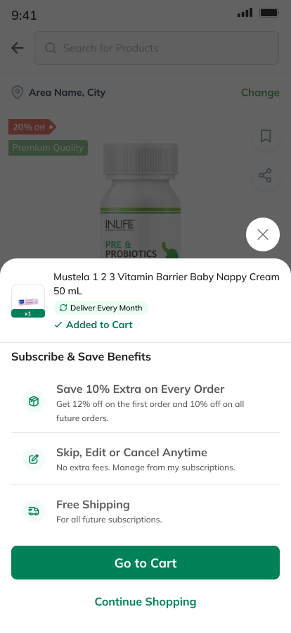
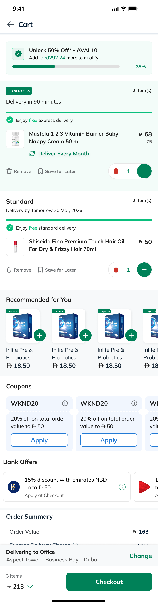
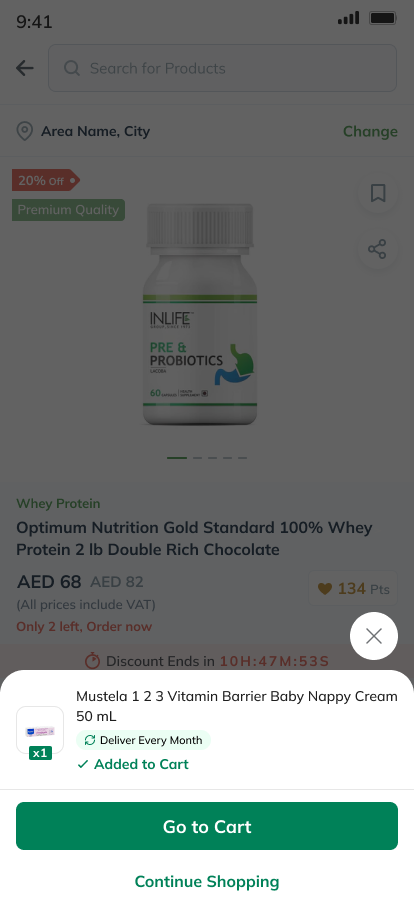
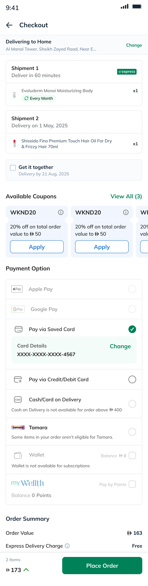
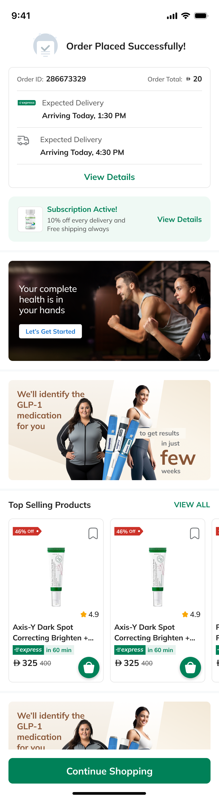
Why this mattered
Customers regularly subscribe to one item and one-time-purchase another in the same session. I designed the cart to hold both states per line item simultaneously, with each subscription line carrying its own frequency control, rather than forcing one subscription state per cart.
Why this mattered
Moving a subscribed item to 'save for later' and back needed an explicit rule: it returns as a one-time item with the subscribe option still offered, never silently re-subscribed. This avoided a class of billing surprises support had flagged in the competitor audit.
Why this mattered
Single-frequency products, subscription-API failures, and items going out-of-stock immediately after subscribing were specified and approved alongside the primary flow — not patched in after engineering hit them. This is usually where subscription products lose customer trust fastest.
Decision 03 — Control & trust
Every regional competitor I audited buried cancellation behind a contact-support flow. I made the opposite call: put cancel, skip, and edit at the same visibility level as "manage," and use the moment of leaving to remind people what they're giving up — honestly, without dark patterns.
Entry → Subscription list → Details → Payment processed
An empty state that explains the value before a customer has any subscriptions, and a details page that shows savings-to-date up front — the number people actually want to see when they open this screen.
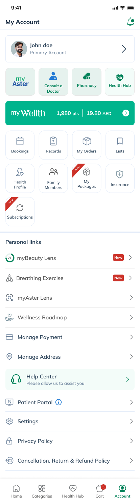
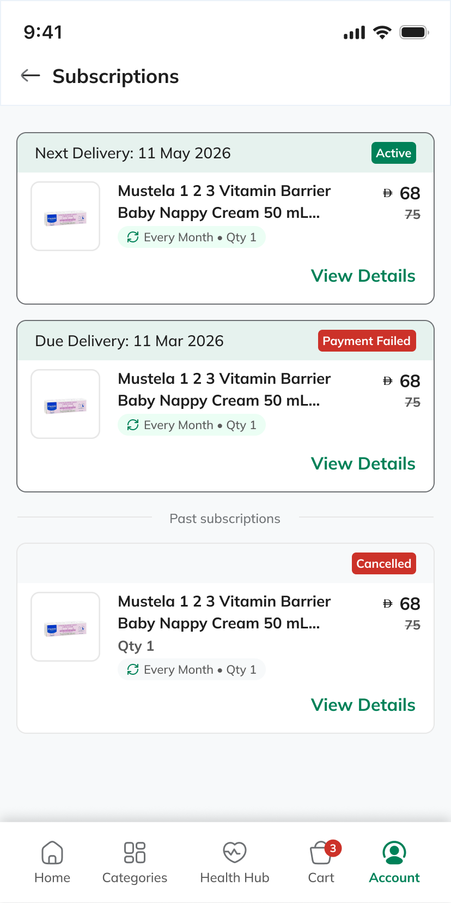
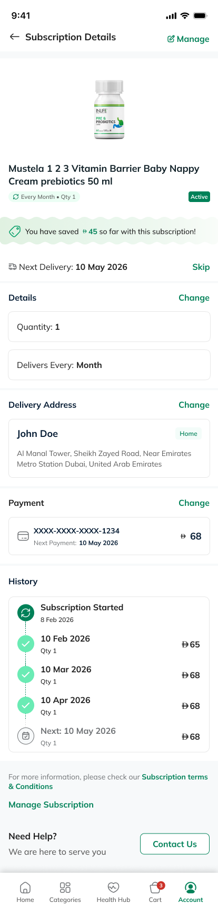
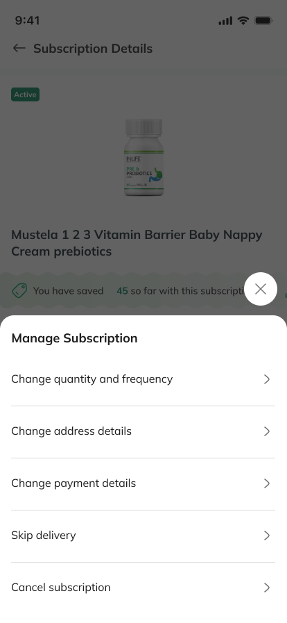
Why this mattered
The cancellation bottom-sheet always offers 'skip next delivery instead' above the cancel confirmation, with a plain-language breakdown of what's lost (savings %, free delivery, auto-supply). This single redirect is the standard retention pattern across every competitor I studied, and the cheapest one to build well.
Manage → Change quantity/frequency → Skip next → Cancel → Reason capture
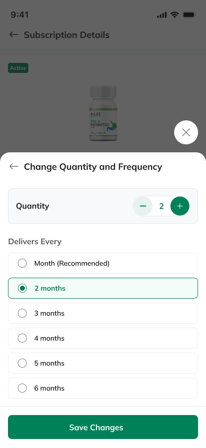
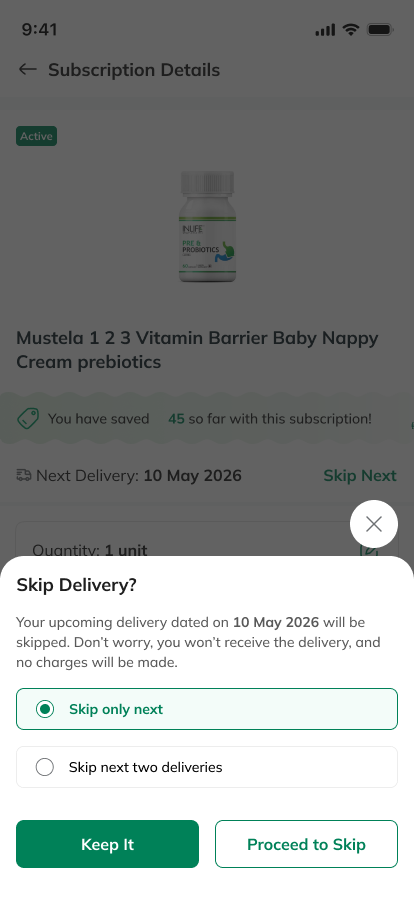
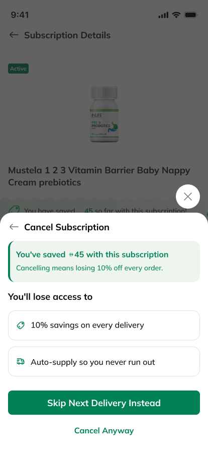
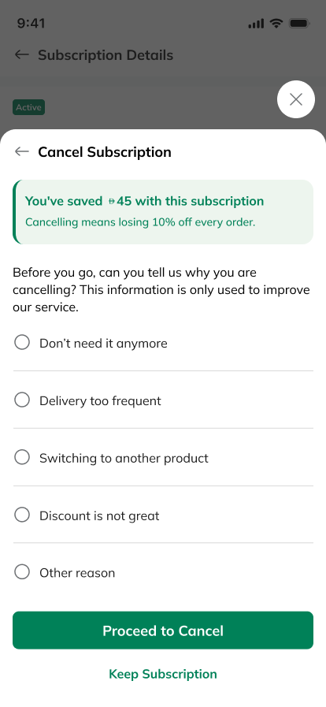
Cancel reason → Cancelled state → Reactivate → Change details → Reactivated
Cancelled subscriptions stay visible with a one-tap reactivate, pre-filled with the previous quantity and cadence — rejoining shouldn't mean re-entering the whole form.
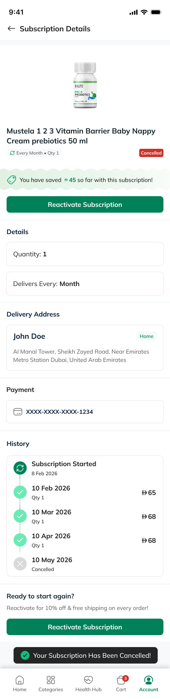
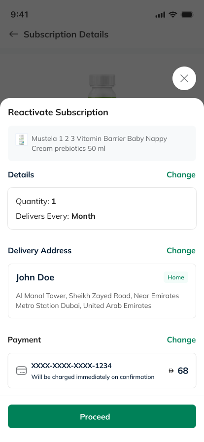
Why this mattered
A failed renewal pauses (never silently cancels) the subscription, names the exact card that failed, and offers update-or-retry inline — including 3DS verification through the existing checkout.com sheet, so the customer never leaves the subscription context to fix it.
Payment declined → Card expired / unknown failure → Add card → Verify → Resolved
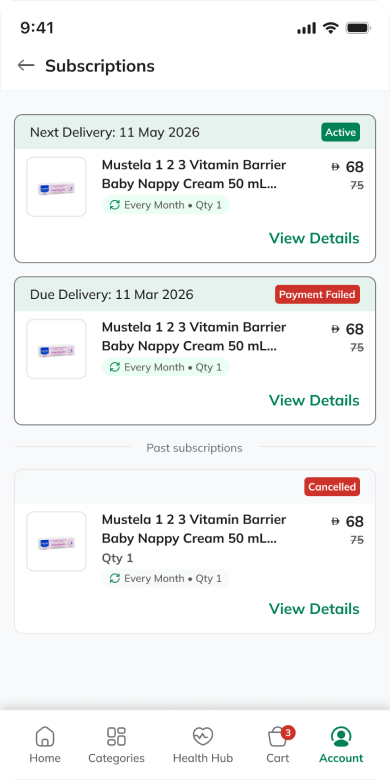
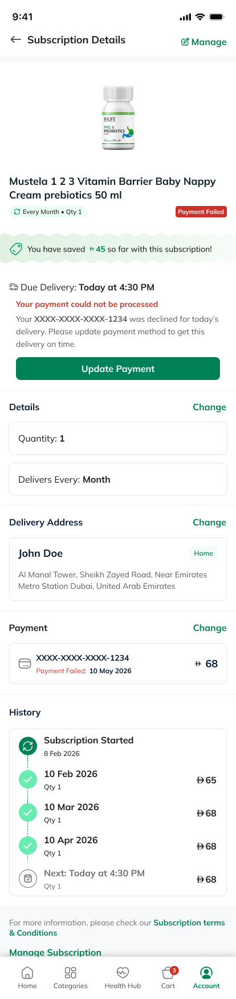
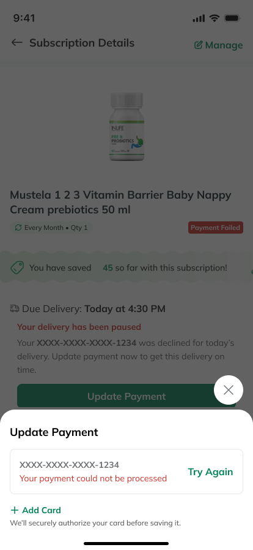
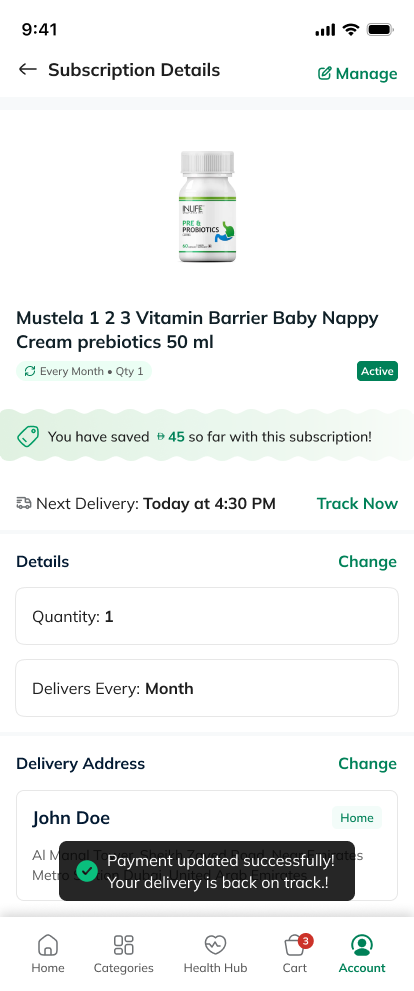
Change quantity/frequency, address & payment — with locked-delivery messaging
A delivery within the next 24 hours is explicitly called out as 'locked' — changes apply from the next cycle. This single line of copy removed the most common confused-customer ticket.
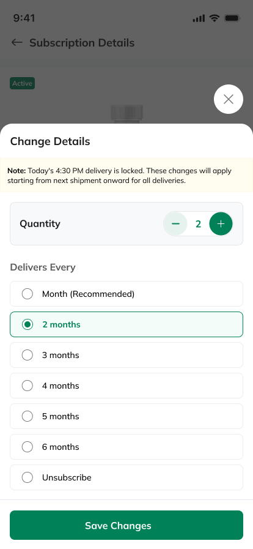
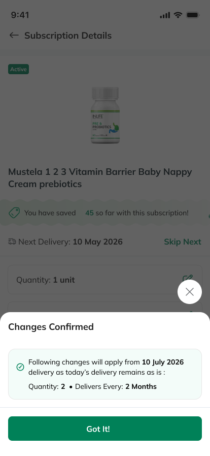
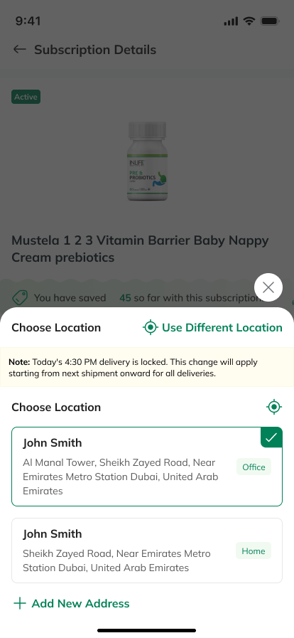
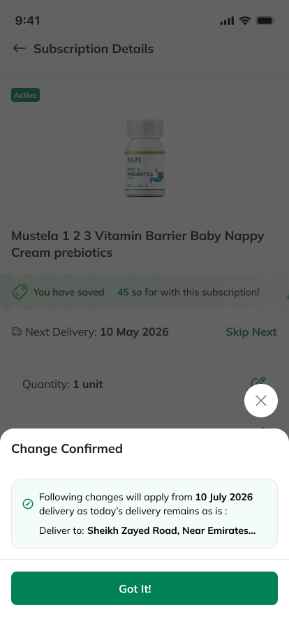
Subscriptions surface consistently outside the dedicated screen too — inside live order tracking, mixed one-time/subscription orders, and order history.
Outcome
A full-funnel system, not a feature: discovery surfacing, a dual-state cart and checkout, and a complete post-purchase management suite — all specified to handle failure states, built bilingual (English / Arabic RTL) from day one.
350+
distinct screen states shipped across discovery, checkout and management
3
platforms designed in parallel — iOS, Android, and responsive Web
2
languages and writing directions supported natively, LTR and Arabic RTL
1
unified cart model supporting mixed subscription + one-time items per order
Reflection
The 'happy path' of this flow took a few days to design. Payment failures, OOS-after-subscribing, skip vs. cancel, and mixed carts took the other two weeks — and that's where most of the trust is won or lost.
Designing Arabic RTL alongside English, rather than flipping it after, caught layout issues — like asymmetric badge placement and directional icons — that a late localization pass would have shipped broken.
"Skip instead of cancel" only works if the savings-lost framing is honest and specific. Vague copy tested worse in round one than naming the exact percentage and delivery promise.
With more runway, I'd run a dedicated study on how customers perceive the savings framing (% off vs. AED saved) before locking the PDP card design — we validated usability, but not which number actually motivates conversion.
myAster · B2C e-pharmacy · 2025 · Case study
Pre-defined combinations of 2–3 SKUs, sold as a distinct catalog item while each product also stays purchasable alone.
The problem
Bundle SKUs and single products looked identical on the shelf, and the add-to-cart upsell gave users no reason to understand why it appeared.
The outcome
A sequenced upsell system with pre-attentive visual differentiation, projected to convert 3× higher than a generic multi-offer list.
3×
Conversion vs. generic lists
8–15%
Projected upsell conversion
13
Screens across the funnel
4
Platform variants shipped
Context
myAster is the #1 healthcare and pharmacy platform across the UAE, KSA, and India — serving millions of users with express medicine delivery, doctor consultations, and wellness products. As part of an AOV and conversion growth initiative, the product team introduced Virtual Bundles: pre-defined combinations of 2–3 different SKUs sold together at a discounted combo price.
Unlike physical pre-packaged bundles, Virtual Bundles exist as a distinct catalog SKU while each child product also remains purchasable individually. This dual-existence creates a unique UX challenge — the same product appears in multiple contexts with different value propositions, and every touchpoint from PLP to order confirmation needed to be designed to communicate this clearly.
3×
higher conversion of targeted bundle upsells vs. generic multi-product lists
8–15%
expected conversion rate on pre-purchase bundle upsell intercepts
13
distinct screens designed across the complete purchase funnel
4
platform variants — Native EN, Native AR, Web EN, Web AR
Problem definition
The brief was clear on what to build — but the hardest design problems emerged only as we mapped the full user journey.
Problem 01
Both card types appeared identical at a glance — same structure, same badge weight. Users couldn't distinguish a multi-product bundle SKU from a single product that happens to have a bundle available.
⚠ Impacts discovery and intent clarity
Problem 02
The platform already had a "Bundle Deal" feature — buy more units of the same product, get a tiered discount. Using the same label for multi-product virtual bundles created a trained mental model conflict.
⚠ Impacts comprehension and trust
Problem 03
The bottom sheet that fires when a user adds a child product to cart had no explanatory sentence. Users saw a bundle offer without understanding that their current item was part of it.
⚠ Impacts upsell conversion rate
Problem 04
The "What's Included" section showed product names and quantities but no images. Users committing to a multi-product purchase couldn't visually identify what they were buying.
⚠ Impacts PDP-to-cart conversion
Problem 05
When a product belongs to multiple bundles, all bundle rows displayed the same savings amount, same badge, same copy. Users had zero basis to compare or choose. Hick's Law predicts this directly causes decision abandonment.
⚠ Impacts multi-bundle engagement
Problem 06
The Order Summary showed subtotals, delivery, and fees — but no "Bundle savings: −฿50" line. This missed the highest-value reinforcement moment in the funnel — right before the user commits to payment.
⚠ Impacts checkout abandonment
Goals & objectives
Users can identify bundle SKUs and bundle-eligible single products at first glance on PLP — without reading text. Pre-attentive visual differentiation via colour, icon, and card treatment.
The add-to-cart intercept achieves 8–15% bundle upgrade rate (targeted single offer, right context framing). Cart upsell nudge achieves minimum 5% upgrade from passive exposure.
Users understand what a Virtual Bundle is, how it differs from existing features, and what they're buying — with zero prior experience. No explanation pop-ups needed.
All components mirror correctly in Arabic RTL — badge positions, price formatting, savings callouts, thumbnail strip direction, and bottom sheet handle placement.
All new badges, tooltips, and modals meet WCAG AA. Minimum 44×44px touch targets. Screen reader labels on all non-text elements. Keyboard navigable on web.
New components follow the existing token system — no new primary colours introduced. Bundle visual language uses teal as a distinct accent within the established green/red/express hierarchy.
Methodology
Phase 1
PRD analysis · PM Q&A · Scope definition · Edge case mapping
Phase 2
6 platforms audited · Industry data · Heuristic evaluation
Phase 3
Journey threads · Decision nodes · Screen inventory
Phase 4
Wireframes · Badge options · Price comparison patterns
Phase 5
Native + web screens · RTL variants · Annotations · Dev specs
Guiding principle
"The most impactful design decisions in this project came from understanding user psychology — specifically Hick's Law (choice overload kills conversion at intercept moments) and the pre-attentive processing principle (users scan before they read)."
— Design principle that guided every touchpoint decisionResearch & benchmarking
Before designing anything, I conducted a deep audit of 6 platforms across global and regional markets — studying bundle mechanics, naming conventions, PLP card patterns, price comparison components, and upsell intercept behaviour.
Pre-purchase bundle upsells with single targeted offers convert at 8–15%. Generic multi-suggestion lists convert at 2–4% — a 3× gap entirely explained by relevance and decisional simplicity.
Shopify Upsell Benchmarks 2026 · Cart-X data across 1,500+ stores
Decision time increases logarithmically with number of choices. Going from 1 bundle offer to 4 identical rows adds significantly more cognitive load than expected — users must compare all options against each other AND the single-item baseline.
Hick-Hyman Law (1952) · Laws of UX
Users scan product grids in under 200ms per card. Colour, shape, and spatial layout are processed pre-attentively — before any text is read. Badge colour must be distinct at this level; text differentiation alone fails the first-glance test.
Visual cognition research · Nielsen Norman Group eye-tracking studies
Most UX guidelines cap product card badges at 1–2 per card. More badges create visual noise and compete for attention. The bundle badge, discount tag, and express badge needed a clear priority hierarchy.
eCommerce Product Badges Best Practices (Segmentify 2024)
6 platforms studied for bundle mechanics, naming, upsell patterns, and regional UX conventions.
| Platform | Bundle naming | Images in upsell | Single offer | Savings in cart | Key learning |
|---|---|---|---|---|---|
| Amazon USGlobal | "Frequently Bought Together" (user-facing) | ✓ | ✓ | ✓ | Never shows multi-bundle list at intercept. One curated set only. |
| iHerbGlobal | "Buy More, Save More" for quantity / "Combo" for multi-product | ✓ | ✓ | ✓ | Best analog for MENA health market. Sidebar combo widget is the closest pattern. |
| NoonMENA | "Bundle Deals" filter / individual combo listings | ✗ | ✓ | ✓ | Critical for Arabic RTL patterns. No native virtual bundle system. |
| IKEA UAERegional | "Also available as a set" mid-body component | ~ | ✓ | ✓ | Best real-world example of child PDP bundle component. Arabic RTL layout patterns. |
| COSRX (Amazon)US | "Starter Routine Bundle" — virtual bundle with 3 separate ASINs | ✓ | ✓ | ✓ | Top-ranked virtual bundle example. Bundle PDP shows all items individually before combined price. |
User flow
Four distinct journey threads were mapped. The key insight: the intercept and passive nudge are sequenced, not alternatives. Single offer intercepts at add-to-cart; multi-bundle list only appears when user explicitly requests it.
Journey A — Bundle discovery from PLP
Browse PLP
User scanning products
Spots Bundle SKU card (teal badge + thumbnail strip)
Pre-attentive visual cue
Bundle PDP
What's included, price comparison
Add Bundle to Cart
Confirmation toast
Cart → Checkout → Confirmation
Bundle as single line item throughout
Journey B — Child SKU add-to-cart upsell intercept
Child SKU PDP
Single product with bundle component
Taps Add to Cart
High-intent execution moment
Intercept bottom sheet fires
Single best bundle. Context sentence.
Add Bundle or Skip
Binary yes/no decision
Journey C — Cart passive nudge (post-skip)
Cart page
User sees item they just added
Passive nudge strip under item
"Bundle offers · Save up to 20% → View"
Multi-bundle side panel
Correct surface for all bundle options
Upgrade to bundle
Savings reflected in Order Summary
Journey D — Filters / active bundle discovery
Applies "Bundle Offers" filter
PLP or filter panel
Filtered PLP — bundle SKUs only
All teal-badged bundle cards
Bundle PDP → Cart
Same path as Journey A from here
07 — Key design decisions
"Bundle Deal"
Already means quantity tiers. Trains wrong mental model.
"Virtual Bundle"
"Virtual" is a backend term. Means nothing to shoppers.
"Bundle" vs "Buy More Save More"
Distinct labels. Different mechanics. Different mental models.
Naming & Taxonomy
The PM's position was to call both features 'Bundle' for consistency. I argued — and substantiated — that this was a label-to-mechanic mismatch that would actively hurt user comprehension. The two features have fundamentally different structures. Amazon, iHerb, and Noon all distinguish these two mechanics with different labels.
Key argument
A badge is a user-facing signal that sets an expectation before the tap. Two different mechanics must have two different labels — or one of them will always disappoint.
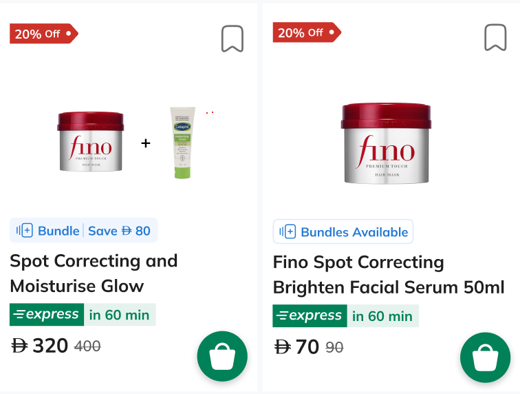
Bundle SKU · Child SKU
PLP Visual Differentiation
While most of the benchmarks studied did not show any badge and only kept the "Bundle" or "Combo" in the product description, I decided it was important for us to show a badge because that was a consistent way to show any special deal on the PLP and we had too many badges. Discussed the prioritisation mechanism on the PLP for the features to go ahead and fix this. Initially the bundle SKUs and child product cards were visually indistinguishable except for image content and badge text. Users scan product grids in under 200ms per card — text cannot be the primary differentiator at that speed. I subtly kept the solid vs. stroke badge with the different communication.
Heads up — this item is part of a bundle. Save ฿80 by adding the full bundle.
Fino Premium Cleanse & Glow Bundle
Intercept Bottom Sheet
The original intercept sheet opened with 'Before You Add' — a procedural header that told users nothing about why they were seeing it. Research shows that when an unexpected modal appears, users' first question is 'why is this here?' — if that's not answered in the first sentence, dismiss rates spike. I added an amber awareness bar at the very top: 'Heads up — the item you're adding is part of a bundle. Save ฿80 by adding the full bundle instead.'
Principle
Reward-first framing consistently outperforms procedural framing. 'Save ฿80 more' as opening line converts better than 'Before You Add.' (Shopify upsell copy research)
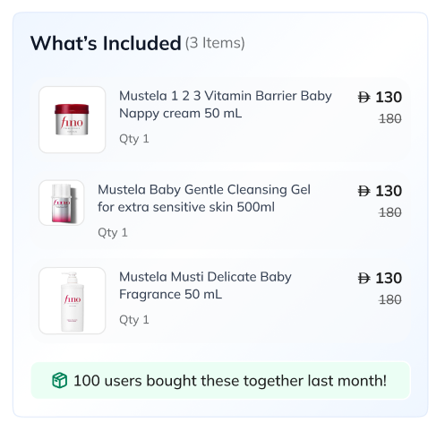
Single item
฿130
1 product
Bundle
฿320
3 products · Save ฿80
Single offer intercept — binary yes/no
Information Architecture
This was the most consequential IA decision in the project. When a user taps Add to Cart, their cognitive state is execution mode — not evaluation mode. They've completed their evaluation and signalled purchase intent. Showing multiple bundle options at this moment forces a mode switch back to evaluation, creating decision fatigue that leads to abandonment of not just the upsell, but sometimes the original item too.
Data
Targeted single-offer upsells convert at 8–15% vs 2–4% for multi-option lists. The 3× gap is entirely explained by decisional simplicity. (Shopify · Cart-X benchmark data)
08 — Final Screens
13 screens across the full purchase journey, all marked APPROVED. Arabic RTL mirrors available for each screen. Desktop web version produced separately.
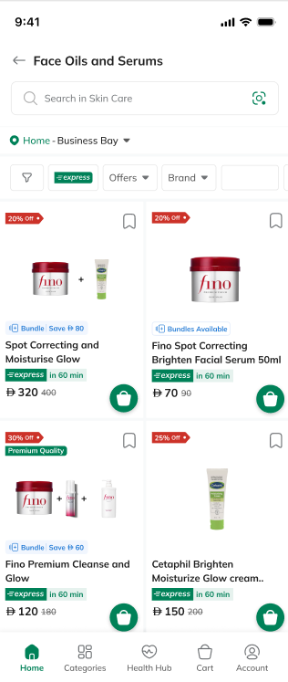
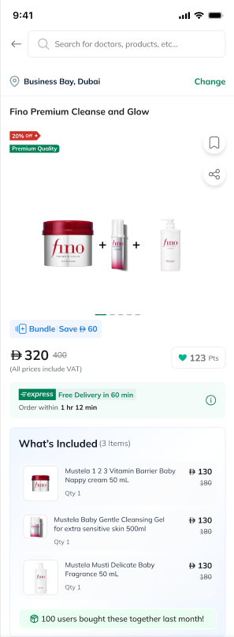
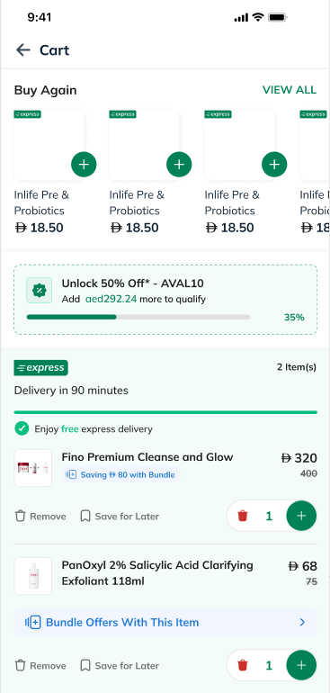
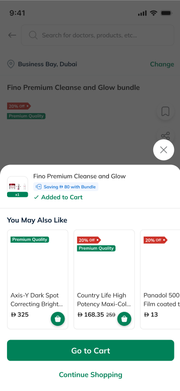
13 screens across the full purchase journey, all marked APPROVED. Arabic RTL mirrors available for each screen. Desktop web version produced separately.
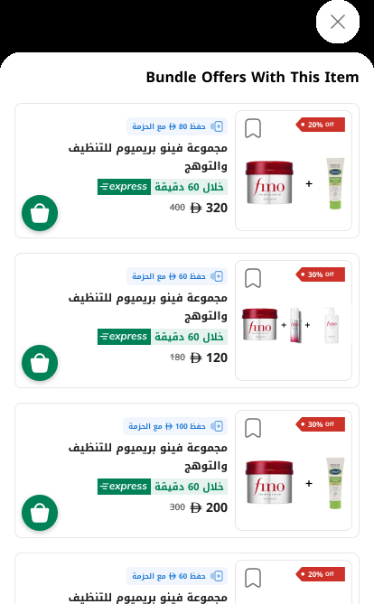
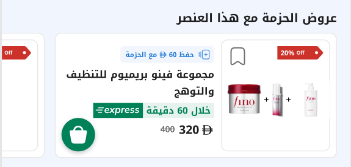
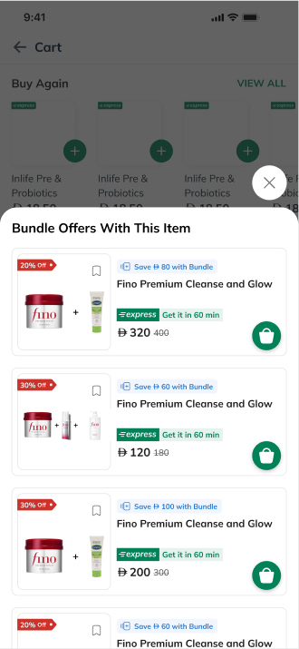
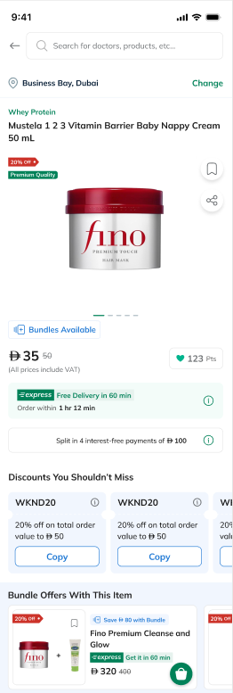
Design outcomes
Bundle SKUs and child product cards are now visually distinct at first glance — before any text is read.
Sequenced upsell system — right offer, right surface, right moment across the full funnel.
Clear, distinct language for each feature type — no mental model conflicts.
Each decision below was backed by research, psychology principles, or competitive benchmark data.
Badge Design
No. Teal for bundle SKUs, green chip for child SKU nudge. Three-layer visual system operating at pre-attentive processing speed.
Pre-attentive processing — colour differentiation works in <200ms, text requires 600ms+
Intercept Pattern
Single best offer — always. Multi-bundle list only when user explicitly taps 'View all'. Binary yes/no is the only pattern that doesn't break execution mode.
Hick's Law + Shopify benchmark: 8–15% vs 2–4% conversion
Context Copy
"Heads up — the item you're adding is part of a bundle." Answers WHY before showing any product detail. Reward-first, not procedural.
Reward-first framing outperforms procedural headers in upsell conversion
Skip Button
Yes. 'No thanks, add single item (฿130)' creates a deliberate final comparison without hiding either option. Not a dark pattern — both are fully visible.
Chewy 'Autoship' skip pattern — price on skip label increases upgrade rate
Order Summary
Yes, at both Cart and Checkout. "Bundle savings: −฿80" as a green positive line. The last moment before payment is where reinforcement matters most.
Amazon, iHerb, Chewy all show savings in Order Summary
Naming
No. Different mechanics require different labels. Quantity tiers = 'Buy More Save More'. Multi-product combo = 'Bundle'. Same label trains wrong mental model.
iHerb, Amazon, Noon all distinguish these two mechanics with distinct naming
Reflections & lessons
01
The "Bundle Deal" vs "Virtual Bundle" naming conflict only surfaced because I mapped the full feature ecosystem early. The better practice: always audit existing features for label, colour, and interaction conflicts before scoping a new feature. A naming conflict caught at week 1 is a 30-minute fix; at week 8, it's a re-review cycle.
02
Every modal, sheet, and intercept that appears unexpectedly must answer 'why am I seeing this?' in the first sentence — before product names, before prices, before the CTA.
03
The naming debate and the single-vs-multi-offer architecture debate were both won with data — Hick's Law, Shopify conversion benchmarks, and Amazon/iHerb/Noon competitive patterns. Having a research foundation for every major design decision means you're not defending opinions, you're presenting evidence.
04
The temptation in e-commerce feature design is to put upsell touchpoints everywhere simultaneously. The research and final design instead established a clear sequence: intercept → skip → passive cart nudge → explicit multi-list view. Each stage is only reachable if the user passed the previous stage and chose not to act. This respects user intent at every step.
A two-phase B2B suite built from scratch: structured performance dashboards for brand partners, evolving into a conversational AI research assistant. This case study covers two modules in depth — Scan and PulseSurveys AI — chosen because together they show the fullest arc of the design thinking involved.
Smytten Pulse started as an internal ops tool built with a plan to eventually sell it externally. As it matured, it split into two distinct product bets — a structured B2B SaaS suite, and later, an AI-native research platform for the same customer base.
Time: 2 weeks · Disciplines: UI/UX, User Testing, Prototyping
The existing sentiment analysis page gave brands access to NPS scores, ratings, and reviews — but only at a surface level. There were no comparisons, no benchmarks, and no way for brands to understand why users liked or disliked their products, or to act on that insight.
Aligned on project scope and stakeholder expectations.
Created concept sketches based on the project brief (BRD) and overview.
Built wireframes and interactive prototypes to visualize proposed changes and gather structured feedback.
Ran sessions with target users and business stakeholders to evaluate the design and surface refinements.
Partnered with engineers through dev handoff to ensure pixel-perfect delivery.
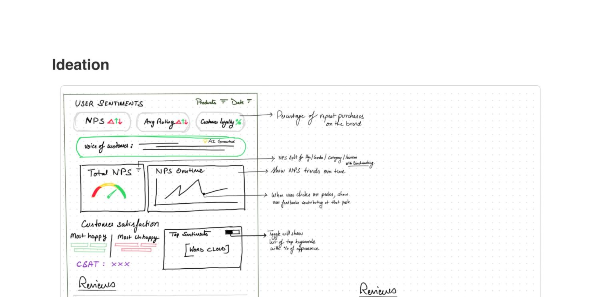
Key structural decisions made at this stage: separating "Voice of Business" (aggregate metrics — NPS, average rating, customer loyalty) from "Voice of Consumers" (individual reviews); adding a live NPS-over-time chart instead of a single static score; and building in sort/filter on reviews so brands could triage feedback instead of scrolling blindly.
After the first draft, we ran moderated usability tests with business stakeholders and users on the live Figma prototype, recording each session for reference.
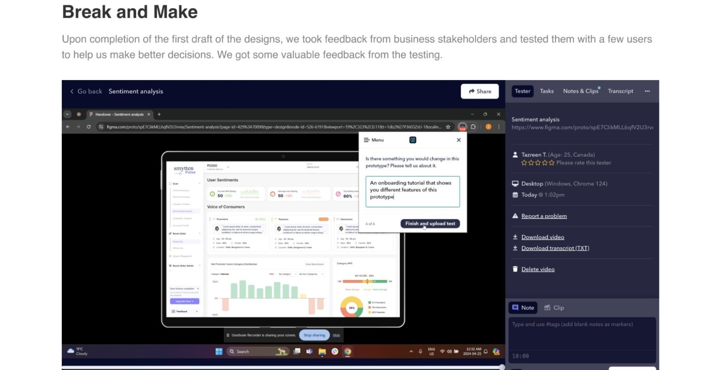
Tazreen T. (25, Canada) — asked for an onboarding tutorial walking through the different features of the prototype.
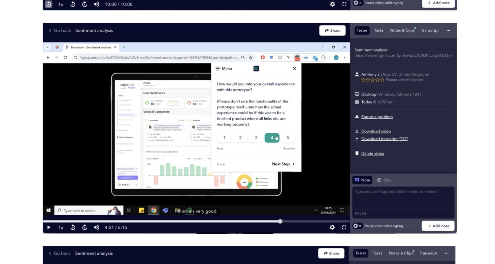
Anthony J. (29, United Kingdom) — rated overall experience separately from individual feature usability, surfacing the need to decouple those two feedback types.
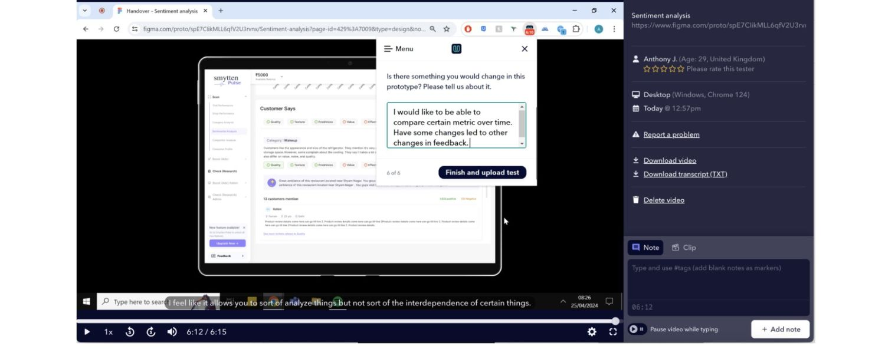
Anthony J.'s written feedback: "I would like to be able to compare certain metric over time. Have some changes led to other changes in feedback." — this comment directly shaped the final benchmark/delta feature.
Sentiment breakdown at a glance, "Voice of Consumers" cards segmented by demographic, and category-level NPS distribution for benchmarking — closing the gap between insight and action.
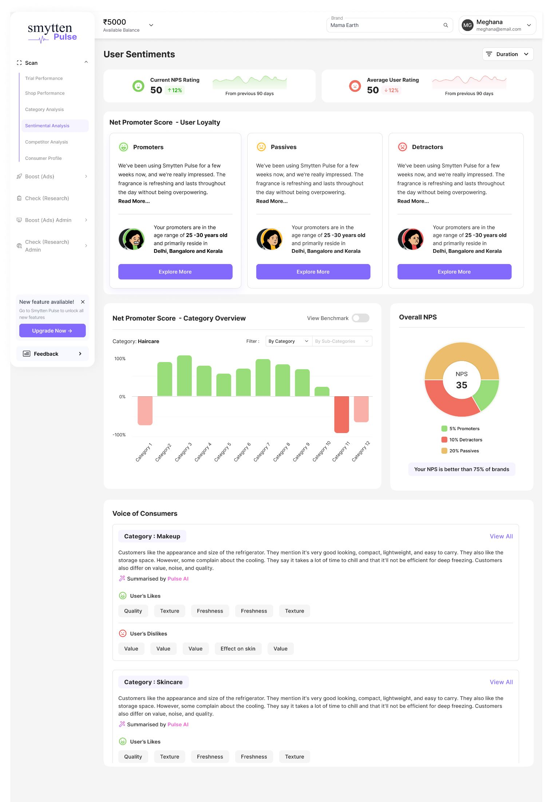
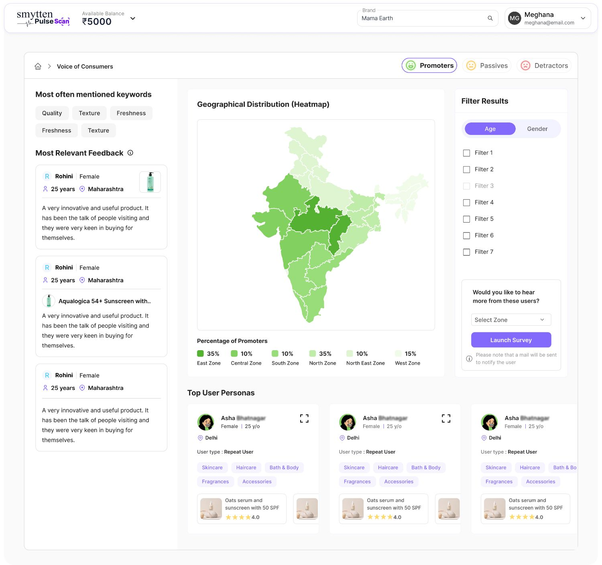
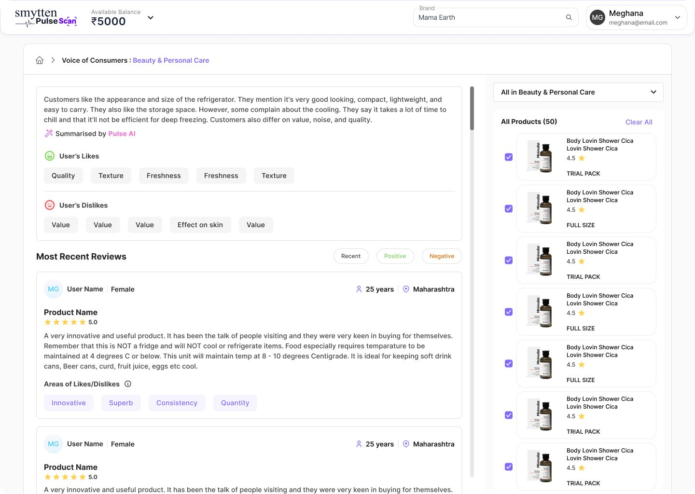
Beyond Sentiment Analysis, Scan included a Category Overview dashboard: trend lines for engagement, consideration, and adoption; a geographic heatmap; regional breakdowns; and adoption demographics — shown here for context on the module's full surface area.
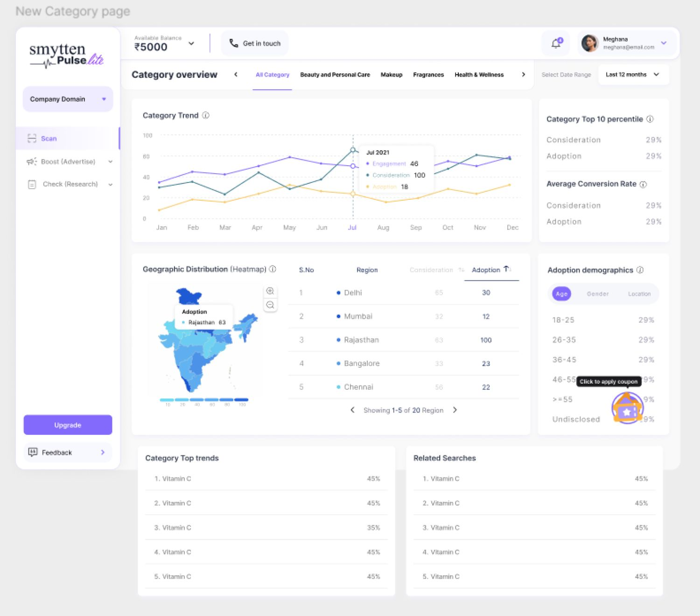
Phase 2 of Smytten Pulse: the leap from structured dashboards to an AI-native research platform, positioned as "India's First AI-Powered Research Platform." Most brand marketers using Pulse weren't trained researchers — the core problem was letting someone with just a rough idea walk away with a fielded, well-structured survey.
Let non-researchers design a rigorous survey without knowing formal research methodology.
Make the AI's reasoning visible and editable at every step, so users trust — and can correct — the output.
Compress a multi-day research design process into a single guided conversation.
Sign-up is framed as the start of a dialogue — email, then name, then an avatar — not a static form. This sets the tone that the whole product is a conversation with an assistant, not a dashboard to configure.
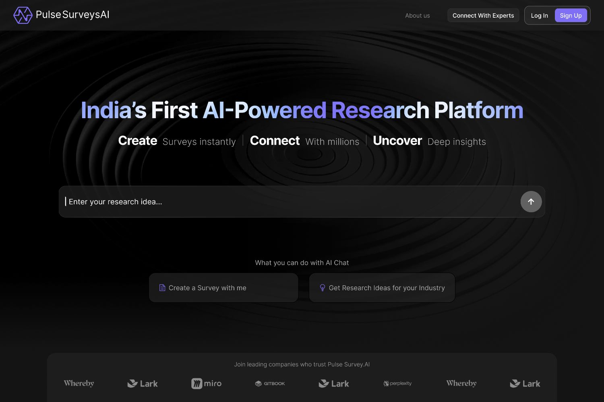
Positions the product as "India's First AI-Powered Research Platform" with a single prompt box front and center — "Create," "Connect," and "Uncover" set expectations before any sign-up is asked for.
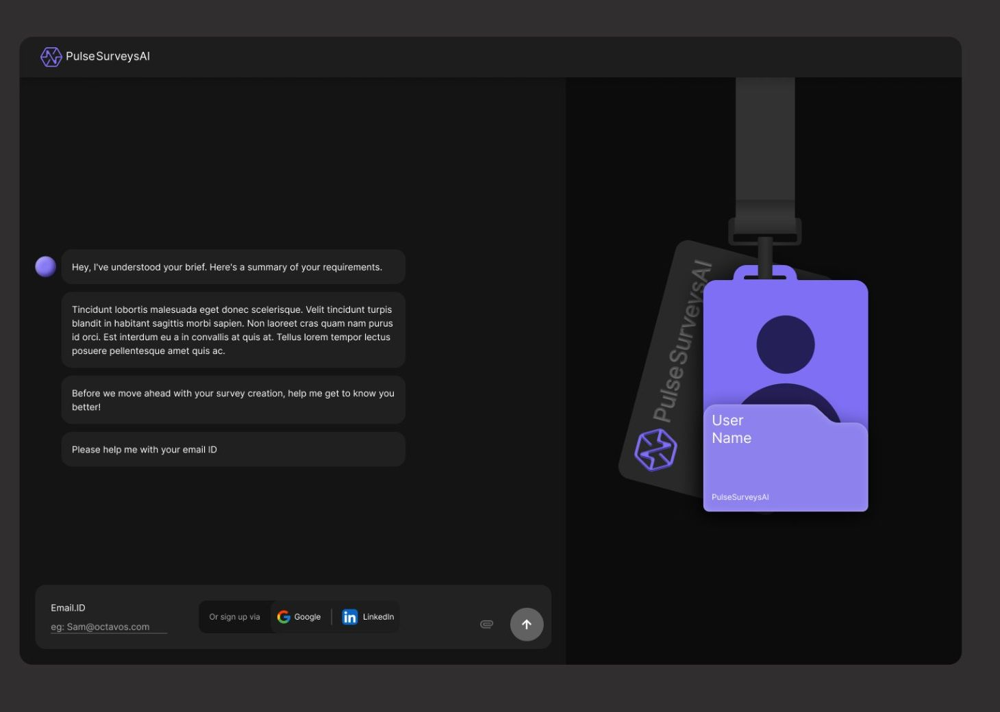
Email (or Google / LinkedIn) is requested as a chat message, not a form field. The ID badge visual reinforces "we're building your profile" rather than "fill this out."
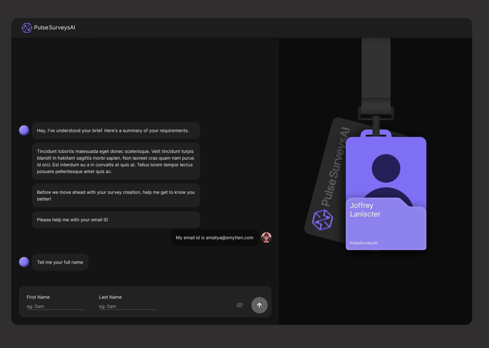
Each answer updates the ID badge live, giving the user visible, incremental progress instead of a blank multi-field form.
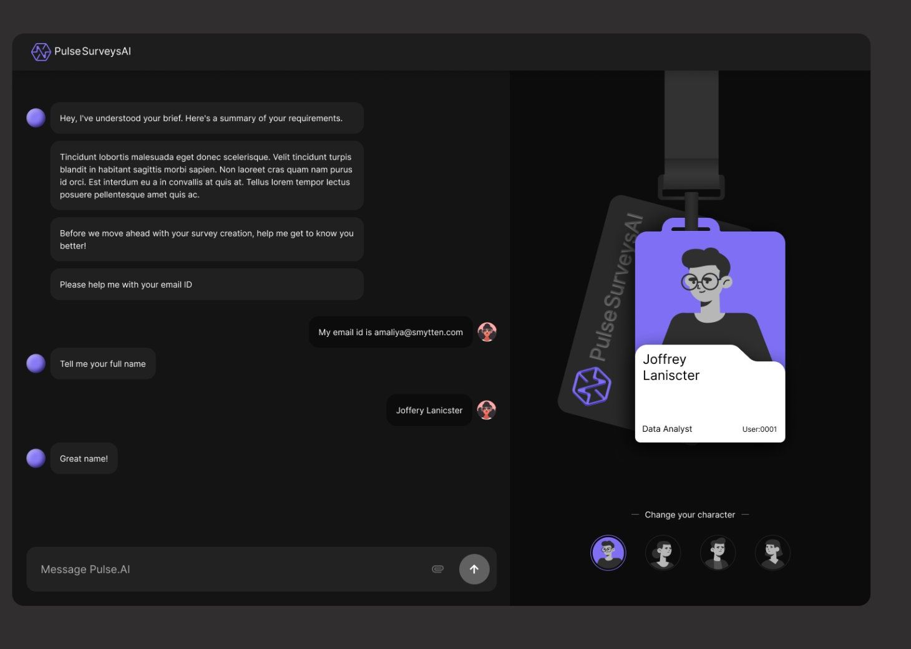
Onboarding closes with a small moment of personalization (avatar choice) before the assistant moves into the actual research task.
Rather than a black-box "AI is thinking" spinner, the flow visualizes each stage — clarifying questions, knowledge building, then a named Knowledge Bank — so the user always knows what the assistant is doing and why.
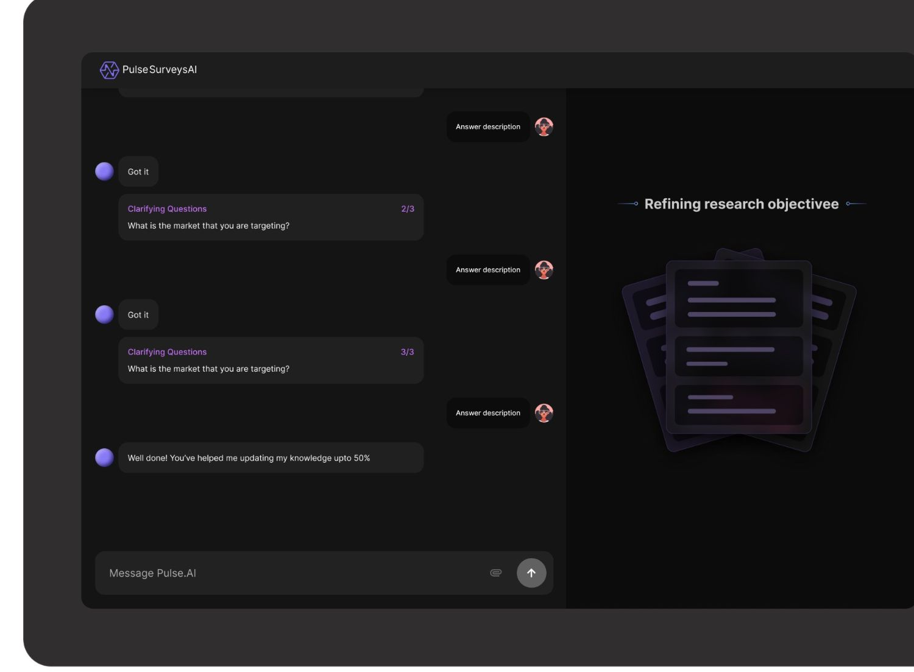
The assistant asks targeted clarifying questions one at a time, tracking progress (2/3, 3/3) instead of dropping a long intake form on the user.
Each answer visibly increases a knowledge percentage — a small but constant signal that the conversation is building toward something concrete.
The knowledge-graph visual stands in for what would otherwise be an opaque loading state — and it closes with a synthesized readout ("who to ask and why it matters") rather than a generic "done" message, showing the user their specific answers were actually used.
The gathered knowledge is packaged into a visible artifact before any survey is generated — and the "Almost Ready" banner sets a clear expectation that one more step remains, rather than dropping the finished survey on the user unannounced.
The Knowledge Bank shows cited web sources and uploaded documents; the assistant then proposes a research summary and survey structure the user can review at each step before the full survey is generated as an editable document.
Before generating anything, the assistant shows its knowledge score, cited web sources, and the user's own uploaded research assets — then explicitly asks permission to proceed.
The summary surfaces "Key Considerations" alongside a "Not Considered" list with an add/remove toggle — the user can pull an overlooked angle into the research before a single survey question is written.
Sections and questions are generated as a structured outline first, so the user reviews the shape of the survey before committing to exact wording.
A progress tracker (Knowledge → Structure → Survey) sits above the finished, editable document with undo/redo — a familiar research-tool object, reached through a very unfamiliar (conversational) path, with "Edit this Survey" and "Select Audience" as the clear next actions.
Demographic, geographic, and interest-based targeting with an estimated reach, a mobile preview, and a final review step before the survey goes live.
Trial plan pricing, the recommended audience (300 people, demographics, geography, interests), and a live mobile preview all sit on one screen — with an explicit choice to accept the recommendation or build the audience manually, plus a checkbox to let the AI expand reach automatically.
Tapping "Full View" shows exactly what the respondent will see on the Smytten app — progress bar, question, and options — so the survey is checked in its real context before it ever gets published.
Every stage of the AI's process is visualized — refining the objective, gathering knowledge, citing sources — rather than hiding reasoning behind a loading state. This builds trust by showing what the AI used to reason, not just the output.
Key considerations, survey structure, and audience targeting are all editable before the user commits. Full automation would feel risky for a paid research decision; no automation would defeat the point of an AI tool — the balance was deliberate.
The end result — a structured survey with sections and question types — looks like something a researcher would recognize. The path to get there is the novel part, which lowers the learning curve for an otherwise technical output.
Scan earned trust through benchmarks and comparisons — showing a brand where they stood. PulseSurveys AI had to earn trust through transparency of process, since there was no ground truth to benchmark against yet.
Smytten · B2C app · 2023 · Case study
Helping first-time users understand trial points and wallet cashback, to raise onboarding conversion.
The problem
Only half of new users completed onboarding, and just 5.5% understood the "how it works" explainer before checking out.
The outcome
Onboarding completion rose from 50% to 90%, and comprehension of the trial-points model rose from 5.5% to 31%.
50→90%
Onboarding completion
5.5→31%
"How it works" comprehension
4–5→2–3
Sessions to first order
9→12%
Full trial-point usage
Context
The onboarding of new users has presented a significant challenge, particularly in helping them understand the concept of trial points, how to use them for trial orders, and navigating other offering modules. We embraced this challenge with the goal of enhancing user comprehension and increasing overall conversion rates for the platform.
Experience objectives
Baseline data
50%
onboarding completion — half of new users dropped before finishing the flow
5.5%
figuring and checking out the "how it works" page for a clear understanding
4–5
average sessions before placing their first trial order
9%
end conversion using all their trial points with cashback understanding
Previous design
The original flow explained the trial-points model once, in a place most users never reached — and then asked them to check out with a number they had no way to interpret.
Methodology
01
The purpose of this meeting is to plan the scope of the project and discuss the stakeholder expectations and project goals.
02
Conducted user research on the live flow to identify the existing pain points and gap.
03
Created the concept sketches based on the research analysis and the project BRD received.
04
Developed wireframes and interactive prototypes to visualize the proposed design changes and gather early feedback.
05
Conducted usability testing sessions with target users and business stakeholders to evaluate the effectiveness of the design.
06
Collaborated with developers to implement the finalized designs, ensuring pixel-perfect implementation and adherence to spec.
User research
Research ran on the live flow, so every finding pointed at a specific screen rather than a general opinion about the product.
Touch points
Ideal flow
Lo-fidelity wireframes
Break and make
Upon completion of the first wireframe designs, we took feedback from business stakeholders and tested them with a few users to help us make better decisions.
Final screens
Outcomes
90%
going through the entire onboarding flow with other benefit modules
31%
figuring and checking out the "how it works" page for a clear understanding
2–3
average sessions before placing their first trial order
12%
end conversion using all their trial points with cashback understanding
"The explanation had to live where the confusion was, not on a page users never opened."
Every one of the five touch points became a dedicated moment in the redesign — from the homepage banner through to the checkout summary — instead of one "how it works" screen carrying the whole explanation.
Smytten · B2C e-commerce · 2022 · Case study
Designing and optimizing a desktop web experience for a trial-and-discovery platform, improving usability, consistency, and engagement.
The problem
The desktop experience had no consistent design system or information architecture, undermining usability relative to the mobile app.
The outcome
A complete design system and IA rebuild across homepage, navigation, listing, product, accounts, and order tracking, unifying the trial and shop experiences.
21
Days to delivery
6+
Core page templates designed
1
Unified style guide shipped
2
Nav modes: Trial ↔ Shop
Introduction
As user expectations continue to evolve, it becomes imperative for companies to constantly refine and optimize their desktop web versions to ensure a seamless and enjoyable user journey.
This case study delves into the design and optimization of the desktop web version of the Smytten app. The goal of this project was to give a consistent overall user experience, improve usability, and increase user engagement metrics for the web version.
Objectives
01
Streamline the navigation structure to make it intuitive and user-friendly, enabling users to easily find desired features and content.
02
Implement a cohesive and visually appealing design language across all pages to improve the overall aesthetics and usability, consistent with the app's overall experience.
03
Design the checkout flow to reduce friction points as users can add both trial and shop products in cart, facilitating seamless transactions and ultimately increasing conversion rates.
04
Follow industry standards and guidelines for web accessibility to make the web application accessible to users already familiar with shopping across different web applications.
Methodology
01
Analyzed competitors' desktop web applications to identify best practices and areas for improvement.
02
Created a new information architecture that organized content and features in a logical and intuitive manner.
03
Developed wireframes and interactive prototypes to visualize the proposed design changes and gather feedback from stakeholders.
04
Conducted usability testing sessions with target users to evaluate the effectiveness of the designed interface and gather feedback for further refinement.
05
Collaborated with developers to implement the finalized designs, ensuring pixel-perfect implementation and adherence to design specifications.
Process
Upon completion of the first wireframe designs, we took feedback from business stakeholders and tested them with a few users to help us make better decisions.
Homepage · Product Listing · Product Detail · Checkout flow
Navigation
Taking into account that the trial section of the app represents a trial and discovery platform while the shop section is similar to any e-commerce platform, we needed a clear primary navigation between the two. The design creates an unambiguous split so users always know which mode they're in.
Trial ↔ Shop primary nav + category structure
Design system
A cohesive design language was applied across all pages — consistent typography, color tokens, iconography, and component patterns aligned with the Smytten brand.
Typography · Colors · Components
Onboarding
In order to help users who are using the platform for the first time understand the concept of trials and wallet cashback, we took a holistic approach through a walkthrough banner and nudges.
Onboarding screens · walkthrough banner · trial point explainer · free gift nudge
Final design
The final designs cover all core flows across both the Trial and Shop experiences, with consistent patterns across every page type.
Homepage
Navigation · All Brands page
Product listing page
Product detail page
Accounts section
Order tracking flow
Highlights
Visual explainer for the trial points currency — users understand value before checkout.
Users can add both Trial and Shop products in a single cart with clear separation.
The cashback mechanic is prominently communicated to incentivize first purchases.
Browse all brands page with filtering by category — Beauty, Makeup, Fragrances, Food & Beverage.
Contextual nudges prompt sign-up at the right moments without blocking the browsing flow.
Desktop-first layouts adapted from the mobile app with appropriate information density.
AI-assisted research tools · Case study
A live, AI-assisted interview platform for qualitative research — designed across the three people who share every session: the respondent talking, the moderator running the call, and the stakeholder who only ever reads the write-up.
The problem
A moderator running a live interview is also keeping the guide on track and reading the room, while the real signal passes by in real time — and everything after the call joins a transcription and synthesis queue before anyone outside research can act on it.
The approach
Design the live moment and the after-the-fact one on the same spine, so a consent choice or a theme tagged during the call travels cleanly into the report a stakeholder reads.
Context
A researcher moderating a live conversation is also keeping the interview guide on track, watching the clock, and reading the room, while the actual signal, a hesitation, a phrase repeated twice, a shift in tone, passes by in real time. Once the call ends, that recording joins a queue: transcribing, tagging, and synthesizing across a dozen sessions before anyone outside the research team can act on what was said.
Pulse Qualitative Research was built to sit inside both of those moments, live and after the fact, without turning the interview into something that feels automated to the person answering the questions. The same 45-minute session has to work for three very different readers, so the design had to hold together across all three surfaces: consent given by the respondent needed to show up in the report; a theme tagged live by the moderator needed to become a chart the client could trust.
One session, three people, three phases
Who is doing what, and when, before the surfaces are broken out individually below.
| Before the session | During the session | After the session | |
|---|---|---|---|
| Respondent | Reviews consent & privacy terms, joins a waiting room | Talks on camera; may get a short in-session survey | Rates the session, receives a session ID & confirmation |
| Moderator | Preps the interview guide and key topic areas | Runs the call; AI surfaces follow-ups and live poll data | Reviews the recording, tags moments, drafts findings |
| Client | Not involved at this stage | Not involved at this stage | Opens a synthesized report: persona, themes, sentiment, and the clips behind them |
Competitive benchmarking
Two products, picked deliberately rather than the longest list available: UserTesting, the category’s default reference point globally, and Lookback, the closest feature for feature match to a live, AI assisted moderated interview. Both get evaluated first by most research teams, including in India, before a team ever considers building or commissioning something purpose built.
| UserTesting | Lookback | Pulse | |
|---|---|---|---|
| Live moderated video | Yes, via a Zoom integration | Yes, native to the platform | Yes, native to the platform |
| Tagging while the call runs | Not part of the core flow, clips get annotated after the session | Yes, live tagging during the session | Yes, live tagging, feeding the same transcript |
| AI support inside the call | Not part of Live Conversation | Yes, suggests follow-up questions live | Yes, drafts a follow-up, moderator sends it |
| View built for the stakeholder | Highlight reels, assembled after the fact | Discover, a cross-session search tool | Client Report, persona-first, built from the same tags |
| Fit for a team’s own India panel | Large bundled global panel, enterprise-only pricing | Global panel and pricing, not India specific | Runs on the team’s own recruited participants |
UserTesting earned its place as the category default by being hard to beat when the audience being researched is in the US or EU, its panel and highlight-reel workflow are built for exactly that. Lookback is the nearer relative in shape: live video, in-session tagging, and an AI that nudges the moderator toward a better follow-up, sitting in roughly the same place in the flow as Pulse’s Live Transcript and AI Assistant tabs. Neither, though, is built around a team recruiting and moderating its own participants in India, and neither folds a session’s tags directly into a persona-first report a stakeholder can read without opening a recording. Those two gaps, not a longer feature list, are what the consent flow and Client Report were actually designed to close.
The respondent
Because every session is recorded and later shared with people who weren’t in the room, consent couldn’t be a checkbox under a “Join” button — it needed the same weight as any other step in the flow. Screens below are exported directly from the working file; names, transcripts and figures on them are placeholder content used during design, not real respondent data.
The moderator
While recording, the moderator’s screen keeps the conversation front and center and pushes everything else — transcript, participants, chat, AI prompts, live poll results — into a slim tabbed rail: Live Transcript, Participants, Direct Message, AI Assistant, Data Analysis.
The client
Nobody outside the research team is watching ten hours of recordings. The synthesis view leads with who was studied and why, then lets a stakeholder drop into the exact clip behind any claim — or just ask a follow-up in the same pane, instead of a request bouncing back to the research team’s inbox.
Opening screen
Every synthesis opens on a persona and the research scope before a single chart, so a stakeholder knows who was studied before deciding what the data means.
Persona · research scope · 8–10 interviews, 30–45 min, remote
Per-question view
Each question pairs its breakdown with an AI-drafted summary the researcher can edit — never published untouched.
AI drafts · researcher edits · then publishes
Evidence
“Several users found the packaging confusing” is a clip to watch, not just a sentence to trust — every claim in the summary links to the moment it came from.
Pain-point distribution · emotional journey · sentiment · snippets
Craft notes
A few calls that shaped the three surfaces, and the reasoning behind each.
01
The session is recorded and shared beyond the room it happened in — agreeing to that needed the same weight as any other step in the flow, not a line of fine print under a “Join” button.
02
Transcript, participant state, chat, AI prompts, and live poll results all live one click from the call itself, so nothing pulls the moderator’s eyes off the faces on the screen.
03
Follow-up questions land as drafts in the moderator’s own composer rather than firing automatically — a human voice asks every question a respondent actually hears.
04
Themes like “enthusiasm” or “experience” mark the transcript line they came from, so synthesizing later is a matter of filtering — not re-listening to every session.
05
Every synthesis opens on a persona and the research scope before a single number, so a stakeholder knows who was studied and why before deciding what the data means.
06
Respondents rate the session and the person who ran it — treating moderation itself as a skill the product can help a team improve over time, not just the tool.
“Three surfaces, one thread to keep tight.”
Working across the respondent, moderator, and client experiences meant the same underlying idea — a theme, a consent choice, a tagged moment — had to travel cleanly between three very different interfaces designed at different points in the project. What I’d push on next is that thread itself: making sure a change to how a moment gets tagged live shows up predictably in the client report, without a separate pass to reconcile the two. The respondent flow also needed to hold up on a phone mid-interview, not only on the desktop screens shown above — a constraint that shaped spacing and touch targets more than anything else in the file.